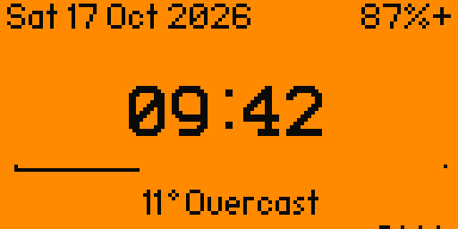
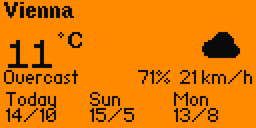
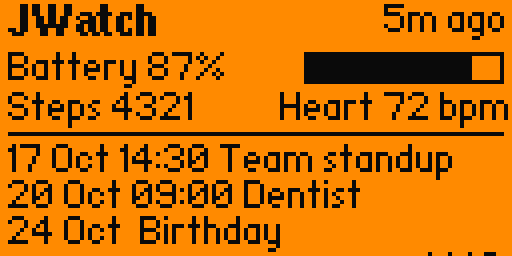

Angularity FW
A heavily modded firmware for the Flipper Zero, built on Momentum. More control over your Control Center, smarter power and security, a Standby display, and updates from the Flipper itself.
Open source (GPL-3.0). Not affiliated with Flipper Devices Inc.
What’s inside
Everything from Momentum, plus the Angularity additions below. Most are opt-in or only run when you open them.
Control Center, your way
Eight tiles you assign yourself: Settings, Lock, Bluetooth, Pseudo-Off, Stealth, Standby, Diagnostics, profiles and more.
Pseudo-Off
Acts like powered off — screen dark, app closed, Bluetooth off — while the Flipper keeps charging. Hold OK to wake.
Theft alarm
Triggered by unplugging or by a GPIO wire. Unlocking silences it, so you can never lock yourself out.
Standby
A dimmed bedside display: clock, weather, calendar, and data from your JWLink watch app.
Update from the Flipper
Download and install new firmware over the WiFi Devboard — with WiFi setup, auto-check and rollback.
App Permissions
Opt-in prompts before third-party apps use the radio, NFC, RFID, IR, GPIO, USB or Bluetooth.
Diagnostics & SD Health
Battery, buttons, speaker, LED, crash info — and an SD card speed, surface and folder check.
Profiles & screenshots
Home / Work / Travel setting profiles, and a hold-keys shortcut that saves a screenshot to the SD card.
Standby, at a glance
Four pages for a bedside or desk display. Swap pages with Left/Right, dim automatically when idle. Weather and clock sync use the WiFi Devboard; everything else works offline.



Pages shown are rendered at the Flipper’s 128×64 resolution with the firmware’s own fonts and sample data.
Phone & desktop companions: qAngularity
A fork of the open-source Flipper mobile apps that updates Angularity FW over Bluetooth. Android 6.0+, iPhone, iPad and Mac (Catalyst).
OTA updates
Reads this project’s release feed, checks the SHA-256, and sends the update to your Flipper.
JWLink bridge
Sends your PineTime watch data and upcoming calendar events to the Flipper’s Standby app.
No tracking
Analytics and crash reporting that went to Flipper’s servers are removed.
The apps are built from source for now — see the qAngularity repository.
Honest status
Compiled and checked, with limited testing on hardware. Features are built and tested on a computer where possible (parsers against real data, screens rendered pixel-for-pixel), but not every feature has been exercised on every Flipper. Features marked experimental are exactly that. Back up your SD card before updating, and keep qFlipper handy for recovery.
Found a bug? Open an issue with what the screen says and what you were doing.